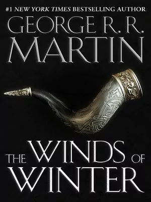
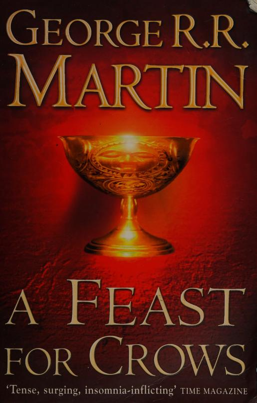

It tells the history of House Targaryen, the dynasty that ruled the Seven Kingdoms of Westeros in the backstory of his series A Song of Ice and Fire.
The Winds Of Winter

Author:George RR Martin
The Winds of Winter is the forthcoming sixth novel in the award-winning epic fantasy series A Song of Ice and Fire by George R. R. Martin.
A Storm Of Swords
Author:George RR Martin
A Storm of Swords continues the story where A Clash of Kings ended. The novel describes the increasingly vicious War of Five Kings in Westeros, Daenerys's strengthening forces in the East, and the oncoming threat of the Others, a ghostly army that is nearly invincible.
A Feast For Crows

Author:George RR Martin
A Feast for Crows focuses on the Lannister family's continuing consolidation of power following victory in the “War of the Five Kings.” Specifically, it follows the events precipitated by the murder of Tywin Lannister, who had been de facto ruler of Westeros.
A Dream Of Spring
Author:George RR Martin
A Dream of Spring is the planned title of the seventh volume of George R. R. Martin's A Song of Ice and Fire series. The book is to follow The Winds of Winter and is intended to be the final volume of the series.
 Author:George RR Martin
Author:George RR Martin  Author:George RR Martin
Author:George RR Martin  Author:George RR Martin
Author:George RR Martin {kind=link}
{kind=link}